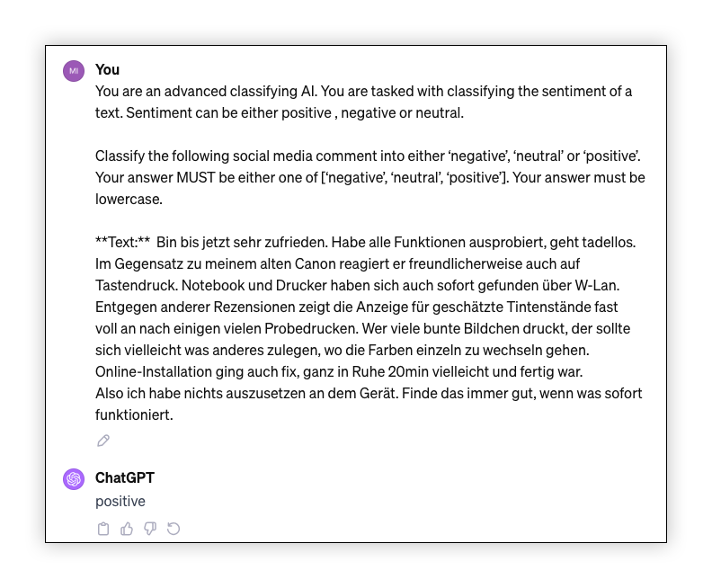
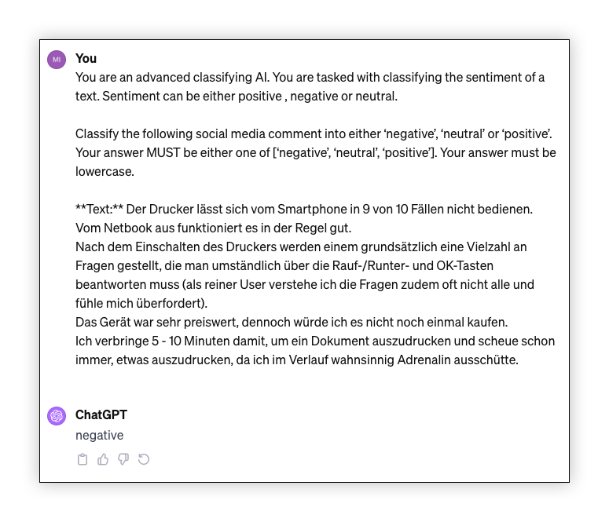
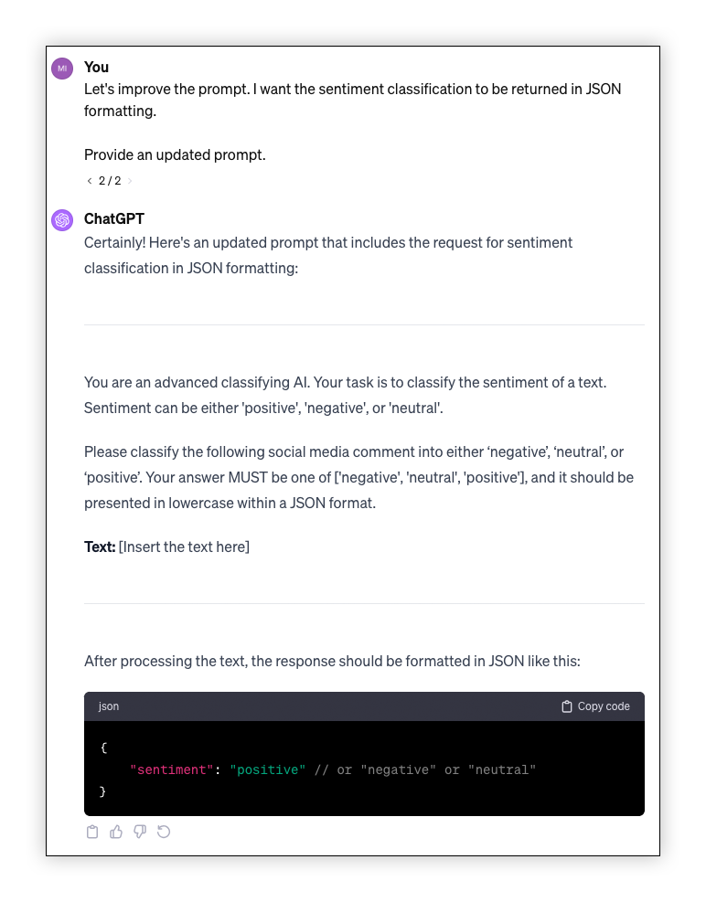
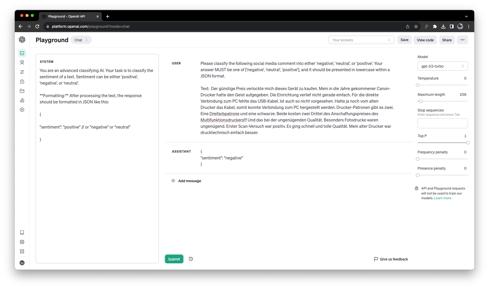

import pandas as pd
df = pd.read_csv('/content/drive/MyDrive/2023-12-01-Export-Posts-Text-Master.csv')Text Classification
Michael Achmann-Denkler ![]()
The text as data taught us that text is unstructured data, which needs some processing to convert its content into measurable structured data useful for quantitative analyses. This process is for many analyses the operationalization step, where we translate theoretical concepts into measurable quantities (Nguyen et al. 2020). Content analysis, a research method used in social science and other disciplines, provides a well-established framework for all necessary steps towards operationalization, classification (labelling or coding), and evaluation. Content analysis can be conducted qualitatively and quantitatively. Döring and Bortz (2016) define the two as:
“Typical for qualitative document analyses is a research problem that presents itself as an open research question and thus has an explorative or theory-building function; accordingly, the entire procedure - despite a reference to the previous state of research and the use of a theoretical framework - is rather inductive, i.e. data-driven.” – (Döring and Bortz 2016, 540)
“[…] a quantitative content analysis must first be carried out in order to generate measured values. In contrast to qualitative document analysis, which interprets a small number of documents in detail, quantitative document analysis works with much larger […] samples of documents. The documents are analysed against the background of the respective research problem with regard to individual, theoretically relevant quantitative characteristics.” – (Döring and Bortz 2016, 552)
Last session’s text exploration approaches might be useful in context of qualitative document analyses. For the quantitative approach, however, we need to operationalize our concept of interest (from the theory, or we use operationalization from the literature), and classify our text according to the operationalization. Additionally, we want to evaluate the computational classification, which will be next session’s topic. For today’s session, we work with two operationalizations, or measurements, from the literature: 1) Mobilization (Wurst, Pohl, and Haßler 2023; Haßler, Kümpel, and Keller 2021), and 2) Sentiment (Møller et al. 2023; Schmidt et al. 2022).
Classification using GPT
We are going to practice text classification using GPT based on operationalization from the literature. As outlined above, we are going to measure sentiment and mobilization. Each variable has different values and applications:
Sentiment analysis, also known as Opinion Mining, is a field within natural language processing (NLP) and linguistics that focuses on identifying and analyzing people’s opinions, sentiments, evaluations, appraisals, attitudes, and emotions expressed towards various entities like products, services, organizations, individuals, events, and topics (B. Liu 2022). Generally, we can conduct polarity-based and emotion-based sentiment analyses. In today’s session we are interested in polarity: Schmidt et al. (2022) distinguish between Positive, Negative, Neutral, and Mixed tweets, Møller et al. (2023) use the categories Positive, Negative, and Neutral.
Mobilization, on the other hand, refers to the efforts made by political parties to encourage and activate citizens to participate in the political process. This can include activities such as voting, supporting a campaign, seeking political information, liking and sharing posts on social media, and other forms of civic engagement (Wurst, Pohl, and Haßler 2023). The authors distinguish between three types of calls to participate: calls to inform, calls to interact, and calls to support. They also subcategorized offline and online forms of each type of call.
Prompt Engineering
Prompt engineering is a new technique in machine learning that has grown alongside the development of large pre-trained models, such as foundation models or large language models (LLMs). This method emerged when it was realized that these models work better with well-designed inputs. Prompt engineering is about creating or changing a question or input so the model can more easily find the right information (Gu et al. 2023). It is based on the understanding that different questions can produce more or less accurate results, so adjusting the format and examples of the prompt is key to getting the best results (Zhao et al. 2021). The field of prompt engineering involves different ways of making these prompts. One can decide to create prompts manually or use automated methods (P. Liu et al. 2023). The growth and use of prompt engineering signify a major change in machine learning, deeply linked to the flexibility and wide range of applications of foundation models (Gu et al. 2023).
Zero-Shot Classification
Zero-shot prompting is a method where a model receives only a natural language instruction to perform a task, without any prior examples or demonstrations, which mirrors the way humans often approach tasks, using only textual instructions. This approach emphasizes convenience and the potential for robustness, minimizing the risk of learning spurious correlations that may be present in the training data. However, this method presents significant challenges, as it can be hard even for humans to understand the task requirements without examples (Brown et al. 2020).
Designing the Prompt
The literature provides several prompts for sentiment analysis using GPT-models. Let’s take this example:
System prompt: You are an advanced classifying AI. You are tasked with classifying the sentiment of a text. Sentiment can be either positive , negative or neutral.
Prompt: Classify the following social media comment into either ‘negative’, ‘neutral’ or ‘positive’. Your answer MUST be either one of [‘negative’, ‘neutral’, ‘positive’]. Your answer must be lowercase.
Testing new prompts within the ChatGPT interface turned out as a good practice through my experiments: Without an additional cost we receive a first understanding of the efficacy of the prompt. The following screenshot shows the sentiment analysis prompt used with some random Amazon reviews:


Using the ChatGPT interface, we can also interact with the model asking for updates:

System Prompt: You are an advanced classifying AI. Your task is to classify the sentiment of a text. Sentiment can be either ‘positive’, ‘negative’, or ‘neutral’.
Formatting: After processing the text, the response should be formatted in JSON like this:
{ "sentiment": "positive" // or "negative" or "neutral"` }Please classify the following social media comment into either ‘negative’, ‘neutral’, or ‘positive’. Your answer MUST be one of [‘negative’, ‘neutral’, ‘positive’], and it should be presented in lowercase within a JSON format.
Text: [Insert the text here]
Next, let’s use our improved prompt in the playground to test the differntiation between system prompt and user prompt:
Tip
Set the temperature variable to 0 for more consistent model output.

Implementing the Prompt using Python
Zero-Shot Multiclass
So far we have been using one request for exactly one classification. Additionally, our classification has been a categorical variable (sentiment). Since GPT natively speaks JSON as well as other file formats, we can easily request our responses to be formated in JSON. As such, we can request the model to return not just one classification at a time, but multiple classifications simultaneously. Above I introduced two theoretically motivated operationalizations. The second example, mobilization, can be measured e.g. as direct vs. indirect calls to action, or online or offline calls. We could model this question as two categorical classification tasks (direct/indirect/NA, online/offline/NA). My example below makes use of so-called dummy variables, where the presence or absence of each value is coded using 1 or 0 (True or False), as a boolean variable. The dummy variables simplifies the prompt and allow cases, where multiple types of calls to action are used in one text.
Prompting for multiclass classification works well when defining the output format to adhere strict formatting rules, for more complex use-cases I recommend the guardrails package. The second step is to intpret the GPT response in the right, in our case, to use the json package. This is an error-prone process (image the model to retun None instead of {})! Make use of python errors and exceptions to guard your loop against runtime errors. The example below expects all values in the COLUMNS variable to be part of the JSON object returned from the model and saves the result in df’s column of the same name. Python’s dynamic typing usually takes care of casting the model result to boolean, further down the stream we might have to cast the columns manually (i.e. after saving and loading the df from csv.)
Few-Shot Classification
Few-shot learning, involves presenting a model with a small number of task demonstrations at inference time. The number of examples is constrained by the model’s context window capacity. The primary advantage of few-shot learning is the significant reduction in the need for task-specific data, alongside minimizing the risk of learning a narrow distribution from a large, but limited, fine-tuning dataset. However, this method has shown inferior performance compared to state-of-the-art fine-tuned models and still requires a minimal amount of task-specific data (Brown et al. 2020).
Saving Money – Multidocument Classification
When using GPT for text classification using the above prompts, we send one request per text document in our df. Each time, we send the system_prompt and prompt, repeating the same text over and over again. With the code below we try another approach: We send a table with multiple documents at once, thus we just need to send the system_prompt and prompt once every n documents, saving tokens and therefore saving money. Classifications using gpt-3.5 are relatively cheap, and the multidocument classification resulted in small quality drops through my experiments, for gpt-4, however, it cut my expenses drastically. gpt-4-turbo lies inbetween the two, it is still 10 times more expansive than gpt-3.5, yet input tokens are 1/3 of gpt-4 prices. See: https://openai.com/pricing
Verdict: Always run the mock requests first to estimate cost. For gpt-3.5 sending one document per request is often the best option. For gpt-4 the multidocument approach is often the better option: Cheaper than single-document gpt-4, higher quality than gpt-3.5. (According to my experiments, which have limitations!).
New System Prompt
Let’s get started by creating a new system prompt that incoporates command for the new approach. We need to define the prompt, as we need to calculate the tokens before splitting the textdocuments in tables.
system_prompt = """
You are an advanced classifying AI. Your task is to classify the sentiment of a text. Sentiment can be either ‘positive’, ‘negative’, or ‘neutral’.
**Instructions**
1. Examine each row in the table under the 'Text' column.
2. For each row consisting of social media comments, classify the content into either ‘negative’, ‘neutral’, or ‘positive’.
3. Fill the 'Classification' column for the corresponding 'Text' row with your answer. Your answer MUST be one of [‘negative’, ‘neutral’, ‘positive’], and it should be presented in lowercase.
**Formatting**
Return a markdown table with the columns "shortcode" and "Classification"
"""From Documents to Markdown Tables
We use the tabulate python package to create markdown tables for as many tables as we manage to send within the model’s context window. Currently, the result_table token length (the mockup response) is calculated using the length of False. Replace the value if you expect longer classifications in this line:
current_result_table = tabulate(batched_data + [(row[meta], False)], headers=[meta, "Classification"], tablefmt="pipe")from tabulate import tabulate
from datetime import datetime
from gpt_cost_estimator import num_tokens_from_messages
def batch_rows_for_tables(df, system_prompt, column, meta, model="gpt-3.5-turbo-0613", **kwargs):
max_rows = kwargs.get("max_rows", 999)
if model == "gpt-4-0613":
max_tokens = 8192
if model == "gpt-4-1106-preview":
max_tokens = 128000 # This model has not been tested with the multidocument approach. It is only capable of 4096 tokens output, therefore we might run into trouble
if model == "gpt-3.5-turbo-0613":
max_tokens = 4096
"""Batch rows from the dataframe to fit within token limits and return as a list of markdown tables."""
tables = []
df[column] = df[column].astype(str)
pbar = tqdm(total=len(df))
while not df.empty:
current_tokens = 0
batched_data = []
batched_results = []
i = 0
for index, row in df.iterrows():
# Remove newline characters from the specific column
cleaned_data = row[column].replace('\n', ' ')
# Construct the table for the current batch
current_table = tabulate(batched_data + [(row[meta], cleaned_data)], headers=[meta, "Text"], tablefmt="pipe")
current_result_table = tabulate(batched_data + [(row[meta], False)], headers=[meta, "Classification"], tablefmt="pipe")
message = [
{"role": "system", "content": system_prompt},
{"role": "user", "content": current_table},
{"role": "assistant", "content": current_result_table}
]
tokens_needed = num_tokens_from_messages(message, model=model)
if tokens_needed <= max_tokens and i < max_rows:
current_tokens = tokens_needed
batched_data.append((row[meta], cleaned_data))
batched_results.append((row[meta], False))
df.drop(index, inplace=True)
i += 1
else:
# Stop when you've reached close to the max token count
pbar.update(len(batched_data))
break
# Convert batched rows to a markdown table and store in tables list
markdown_table = tabulate(batched_data, headers=[meta, "Text"], tablefmt="pipe")
tables.append(markdown_table)
pbar.close()
return tablesThe next command uses the above function to generate all necessary markdown tables. The column parameter of batch_rows_for_tables expects the name of the text column, the meta parameter expects the name of the identifier column. Additionally, we pass the dataframe, system_prompt, and MODEL to the function. Fill in the TEXT_COLUMN, IDENTIFIER, MODEL, and MAX_ROWS variables as needed. See the comments above each variable for more information.
#@markdown What's the column name of the text column?
TEXT_COLUMN = 'Text' # @param {type: "string"}
#@markdown What's the column name of the text column?
IDENTIFIER = 'shortcode' # @param {type: "string"}
#@markdown Which model do you want to use?
MODEL = "gpt-4-0613" # @param ["gpt-3.5-turbo-0613", "gpt-4-1106-preview", "gpt-4-0613"] {allow-input: true}
#@markdown Is there a maximum length of rows? (**Set a very high number, like 999, to disable this feature**)
MAX_ROWS = 999 # @param {type: "number", min:0}
# Create a copy of your df. This is important! The batching process removes processed rows from the df.
df_batch_copy = df.copy()
# Batching the tables, takes a few seconds (~1 Minute)
tables = batch_rows_for_tables(df_batch_copy, system_prompt, TEXT_COLUMN, IDENTIFIER, MODEL, max_rows=MAX_ROWS)Let’s inspect the table. This is one of many tables that will be sent to the model. (I set the MAX_ROWS to 5 to keep the example short. When working with this approach I usually use MAX_ROWS=999.)
print(tables[0])| shortcode | Text |
|:------------|:-----------------------------------------------------------------------------------------------------------------------------------------------------------------------------------------------------------------------------------------------------------------------------------------------------------------------------------------------------------------------------------------------------------------------------------------------------------------------------------------------------------------------------------------------------------------------------------------------------------------------------------------------------------------------------------------------------------------------------------------------------------------------------------------------------------------------------------------------------------------------------------------------------------------------------------------------------------------------------------------------------------------------------------------------------------------------------------------------------------------------------------------------------------------------------------------------------------------------------------------------------------------------------------|
| CyMAe_tufcR | #Landtagswahl23 🤩🧡🙏 #FREIEWÄHLER #Aiwanger #Danke #Landtagswahl |
| CyL975vouHU | Die Landtagswahl war für uns als Liberale hart. Wir haben alles gegeben, um die FDP wieder in den Landtag zu bringen, aber leider hat es nicht gereicht. Danke für euren Einsatz, egal ob beim Plakatieren, Flyern oder am Infostand. 💛 Wir Julis stehen für unsere Überzeugungen ein, auch wenn es gerade nicht gut läuft. Das macht uns aus! Das haben wir in diesem Wahlkampf gezeigt und das werden wir auch in der außerparlamentarischen Opposition zeigen. 💪 Du bist auch davon überzeugt, dass Freiheit und Eigenverantwortung eine Stimme in der Politik brauchen? Dann steh auch du jetzt für diese Überzeugung ein. Unter www.julis.de/mitglied-werden/ kannst du noch heute Mitglied der besten Jugendorganisation der Welt werden. 🚀 #freistart23 |
| CyL8GWWJmci | Nach einem starken Wahlkampf ein verdientes Ergebnis! 💪 Herzlichen Glückwunsch an die CSU und unsere bayrischen JUler, die in der nächsten Legislaturperiode für ein sicheres und stabiles Bayern arbeiten werden. Wir wünschen euch viel Erfolg und alles Gute für das Landtagsmandat (v.l.n.r.): Manuel Knoll, Konrad Baur, Daniel Artmann, Kristan von Waldenfels. |
| CyL7wyJtTV5 | So viele Menschen am Odeonsplatz heute mit einer klaren Botschaft: Wir stehen an der Seite Israels. Die massiven und brutalen Angriffe der Terrororganisation Hamas sind abscheuliche Verbrechen an unschuldigen Männern, Frauen und Kindern. Die Bilder und Videos der barbarischen Morde zerreißen einem das Herz. Der Terror der Hamas ist durch nichts zu rechtfertigen und muss sofort gestoppt werden. Israel hat ein völkerrechtlich verbrieftes Recht auf Selbstverteidigung. Wir Gedenken den Toten. Wir trauern mit den Familien und Angehörigen. Und wir bangen und hoffen mit den verschleppten Israelis. Es ist gut, dass die Bundesregierung die Entwicklungshilfe für die palestinensischen Gebiete eingefroren hat. Das ist richtig. Nicht richtig ist, dass Menschen in Deutschland die Angriffe der Hamas auf Jüdinnen und Juden feiern. Das ist mit nichts zu rechtfertigen und wir verurteilen es aufs schärfste. Wir hier in Deutschland und Bayern haben noch viel zu tun: Antisemitismus und auch israelbezogener Antisemitismus ist in der Mitte unserer Gesellschaft vorhanden. Es ist die Aufgabe des frisch gewählten Bayerischen Landtags noch mehr gegen Judenhass zu tun. 📸 @andreasgregor #standwithisrael #israel #münchen #bayern |
| CyLxwHuvR4Y | Herzlichen Glückwunsch zu diesem grandiosen Wahlsieg! Mit allen 12 JU-Direktkandidaten seid ihr in den hessischen Landtag gezogen 🎉 Wir gratulieren euch und wünschen euch viel Erfolg für den Start und die nächsten fünf Jahre im Parlament (v.l.n.r.): Kim-Sarah Speer, Frederik Bouffier, Sebastian Sommer, Lucas Schmitz, Sebastian Müller, Christin Ziegler, Marie-Sophie Künkel, Maximilian Schimmel, Christoph Mikuschek, Patrick Appel, Maximilian Bathon und Dominik Leyh! |We can also inspect them using Markdown formatting in the notebooks:
from IPython.display import Markdown, display
display(Markdown(tables[0]))| shortcode | Text |
|---|---|
| CyMAe_tufcR | #Landtagswahl23 🤩🧡🙏 #FREIEWÄHLER #Aiwanger #Danke #Landtagswahl |
| CyL975vouHU | Die Landtagswahl war für uns als Liberale hart. Wir haben alles gegeben, um die FDP wieder in den Landtag zu bringen, aber leider hat es nicht gereicht. Danke für euren Einsatz, egal ob beim Plakatieren, Flyern oder am Infostand. 💛 Wir Julis stehen für unsere Überzeugungen ein, auch wenn es gerade nicht gut läuft. Das macht uns aus! Das haben wir in diesem Wahlkampf gezeigt und das werden wir auch in der außerparlamentarischen Opposition zeigen. 💪 Du bist auch davon überzeugt, dass Freiheit und Eigenverantwortung eine Stimme in der Politik brauchen? Dann steh auch du jetzt für diese Überzeugung ein. Unter www.julis.de/mitglied-werden/ kannst du noch heute Mitglied der besten Jugendorganisation der Welt werden. 🚀 #freistart23 |
| CyL8GWWJmci | Nach einem starken Wahlkampf ein verdientes Ergebnis! 💪 Herzlichen Glückwunsch an die CSU und unsere bayrischen JUler, die in der nächsten Legislaturperiode für ein sicheres und stabiles Bayern arbeiten werden. Wir wünschen euch viel Erfolg und alles Gute für das Landtagsmandat (v.l.n.r.): Manuel Knoll, Konrad Baur, Daniel Artmann, Kristan von Waldenfels. |
| CyL7wyJtTV5 | So viele Menschen am Odeonsplatz heute mit einer klaren Botschaft: Wir stehen an der Seite Israels. Die massiven und brutalen Angriffe der Terrororganisation Hamas sind abscheuliche Verbrechen an unschuldigen Männern, Frauen und Kindern. Die Bilder und Videos der barbarischen Morde zerreißen einem das Herz. Der Terror der Hamas ist durch nichts zu rechtfertigen und muss sofort gestoppt werden. Israel hat ein völkerrechtlich verbrieftes Recht auf Selbstverteidigung. Wir Gedenken den Toten. Wir trauern mit den Familien und Angehörigen. Und wir bangen und hoffen mit den verschleppten Israelis. Es ist gut, dass die Bundesregierung die Entwicklungshilfe für die palestinensischen Gebiete eingefroren hat. Das ist richtig. Nicht richtig ist, dass Menschen in Deutschland die Angriffe der Hamas auf Jüdinnen und Juden feiern. Das ist mit nichts zu rechtfertigen und wir verurteilen es aufs schärfste. Wir hier in Deutschland und Bayern haben noch viel zu tun: Antisemitismus und auch israelbezogener Antisemitismus ist in der Mitte unserer Gesellschaft vorhanden. Es ist die Aufgabe des frisch gewählten Bayerischen Landtags noch mehr gegen Judenhass zu tun. 📸 (andreasgregor?) #standwithisrael #israel #münchen #bayern |
| CyLxwHuvR4Y | Herzlichen Glückwunsch zu diesem grandiosen Wahlsieg! Mit allen 12 JU-Direktkandidaten seid ihr in den hessischen Landtag gezogen 🎉 Wir gratulieren euch und wünschen euch viel Erfolg für den Start und die nächsten fünf Jahre im Parlament (v.l.n.r.): Kim-Sarah Speer, Frederik Bouffier, Sebastian Sommer, Lucas Schmitz, Sebastian Müller, Christin Ziegler, Marie-Sophie Künkel, Maximilian Schimmel, Christoph Mikuschek, Patrick Appel, Maximilian Bathon und Dominik Leyh! |
Run the Multidocument Request
he following code snippet uses my gpt-cost-estimator package to simulate API requests and calculate a cost estimate. Please run the estimation whne possible to asses the price-tag before sending requests to OpenAI!
Fill in the MOCK, RESET_COST, SAMPLE_SIZE, CLASS_NAME, and FILE_NAME variables as needed (see comments above each variable.)
from tqdm.auto import tqdm
import json
import ast
from datetime import datetime
from io import StringIO
#@title Run the Multidocument Request
#@markdown T
#@markdown Do you want to mock the OpenAI request (dry run) to calculate the estimated price?
MOCK = False # @param {type: "boolean"}
#@markdown Do you want to reset the cost estimation when running the query?
RESET_COST = True # @param {type: "boolean"}
#@markdown How many **tables** do you want to send? Enter $0$ for all.
SAMPLE_SIZE = 1 # @param {type: "number", min: 0}
#@markdown Filename for the **new** table that only contains sentiments.
FILE_NAME = '/content/drive/MyDrive/2023-12-08-Posts-LTW-Sentiment' # @param {type: "string"}
#@markdown Name for the classification column
CLASS_NAME = 'Sentiment' # @param {type: "string"}
def safe_literal_eval(value):
if isinstance(value, (str, bytes)):
try:
return ast.literal_eval(value)
except ValueError:
return value # or handle the error in another way if you want
return value
def parse_response(response):
# Determine if the response is a list or markdown table
if ':' in response.split('\n')[0]:
# List
lines = [line.strip() for line in response.strip().split('\n')]
data = [(int(line.split(': ')[0]), line.split(': ')[1]) for line in lines]
# Convert the parsed data into a DataFrame
result_df = pd.DataFrame(data, columns=['uuid', 'Positioning'])
else:
# Markdown Table
csv_data = '\n'.join([','.join(line.split('|')[1:-1]) for line in response.split('\n') if line.strip() and not line.startswith('|:')])
result_df = pd.read_csv(StringIO(csv_data.strip()), sep=",", skipinitialspace=True)
# Striping Whitespaces
result_df.columns = [col.strip() for col in result_df.columns]
if 'Classification' in result_df.columns:
# Renaming the column to fit the rest of the project.
result_df = result_df.rename(columns={"Classification": CLASS_NAME})
result_df = result_df.applymap(lambda x: x.strip() if isinstance(x, str) else x)
return result_df
try:
# Attempt to read the CSV file into a DataFrame
new_df = pd.read_csv(FILE_NAME)
except FileNotFoundError:
# If the file is not found, create an empty DataFrame with the specified columns
new_df = pd.DataFrame(columns=[IDENTIFIER, CLASS_NAME])
# Reset Estimates
CostEstimator.reset()
print("Reset Cost Estimation")
if 0 < SAMPLE_SIZE <= len(tables):
filtered_tables = tables[:SAMPLE_SIZE]
else:
filtered_tables = tables
for table in tqdm(filtered_tables):
result = run_request(system_prompt, table, MODEL, MOCK)
if result and not MOCK:
# Parsing the data
result_df = parse_response(result.choices[0].message.content)
# Append it to master_df
new_df = pd.concat([new_df, result_df], ignore_index=True)
# Save Progress
new_df.to_csv(FILE_NAME, index=False)
print()
if not MOCK:
print(f"Saved {FILE_NAME}.")
new_df = new_df.dropna(subset=[IDENTIFIER])
new_df[CLASS_NAME] = new_df[CLASS_NAME].apply(safe_literal_eval)
uuid_to_classification = new_df.set_index(IDENTIFIER)[CLASS_NAME].to_dict()
mask = df[IDENTIFIER].isin(uuid_to_classification.keys())
df.loc[mask, CLASS_NAME] = df.loc[mask, IDENTIFIER].replace(uuid_to_classification)
print()Reset Cost Estimation
Cost: $0.1408 | Total: $0.1408
Saved /content/drive/MyDrive/2023-12-08-Posts-LTW-Sentiment.
new_df.head()| shortcode | Sentiment | |
|---|---|---|
| 0 | CyMAe_tufcR | positive |
| 1 | CyL975vouHU | neutral |
| 2 | CyL8GWWJmci | positive |
| 3 | CyL7wyJtTV5 | negative |
| 4 | CyLxwHuvR4Y | positive |
The code above expects the GPT-API to return results in a markdown formatted table (see above). We keep appending the API responses to a new_df where we temporarily store the classifications. For each loop (i.e. each time received a classification), we store the results on Google Drive as a backup, since each result has a price tag. In case of error we can resume the operation later without the need to start all over again. The code above does not provide the necessary logic for that, but you should be able to quickly add it.
Once the loop finished, we use the shortcode column from the API response and join the classification data with df:

And finally our df looks as follows. As outlined at the start of the text exploration chapter, we want to fill one dataframe piece by piece with more and more classifications.
df[mask][['shortcode', 'Text', 'Text Type', 'Sentiment']].head()| shortcode | Text | Text Type | Sentiment | |
|---|---|---|---|---|
| 0 | CyMAe_tufcR | #Landtagswahl23 🤩🧡🙏 #FREIEWÄHLER #Aiwanger #Da... | Caption | positive |
| 1 | CyL975vouHU | Die Landtagswahl war für uns als Liberale hart... | Caption | neutral |
| 2 | CyL8GWWJmci | Nach einem starken Wahlkampf ein verdientes Er... | Caption | positive |
| 3 | CyL7wyJtTV5 | So viele Menschen am Odeonsplatz heute mit ein... | Caption | negative |
| 4 | CyLxwHuvR4Y | Herzlichen Glückwunsch zu diesem grandiosen Wa... | Caption | positive |
Conclusion
We have scratched the surface of (textual) content analysis as a foundation for our text classification tasks. Starting our journey with the idea of text as data and following the exploration of textual content, we just added a new instrument to our toolbox for computational social media analysis: text classification. We focused solely on prompting and GPT for the classification tasks. There exist several other approaches (e.g. using BERT and other trasnformer models), and several providers offer cloud services and APIs for classification tasks (e.g. in the Google Cloud). For sentiment analysis there are dedicated models (see Schmidt et al. (2022) for the application of such a model), and even more services and APIs (e.g. on Microsoft Azure).
At the same time, the first papers show interesting results when using GPT for text classification (e.g. Brown et al. 2020), with prompt design being accessible for researcher with zero to few experience with machine learning. There is currently a lot of opportunity to experiment with prompts, and to test and evaluate Large Language Models and prompts against fine-tuned and existing models. We are currently missing one last step to setup a complete experiment: The evaluation, which is the next topic of our seminar. While there exists literature about prompting and prompt engineering (see top and further reading), some of the literature has a more technical motivation and is short of practical advice. Through this session I have presented the practical knowledge that I gathered through my last research project (currently under review), which still is experimental. I presented the Zero-Shot and Few-Shot approach, as well as a Zero-Shot Multiclass approach and a Multidocument approach to save money / requests while working with expensive models.
Further Reading
References
Borra, Creators Erik. n.d. “ErikBorra/PromptCompass: Updated models.” https://doi.org/10.5281/zenodo.8359916.
Brown, Tom B, Benjamin Mann, Nick Ryder, Melanie Subbiah, Jared Kaplan, Prafulla Dhariwal, Arvind Neelakantan, et al. 2020. “Language Models are Few-Shot Learners,” May. http://arxiv.org/abs/2005.14165.
Döring, Nicola, and Jürgen Bortz. 2016. Forschungsmethoden und Evaluation in den Sozial- und Humanwissenschaften. Springer, Berlin, Heidelberg. https://doi.org/10.1007/978-3-642-41089-5.
Gu, Jindong, Zhen Han, Shuo Chen, Ahmad Beirami, Bailan He, Gengyuan Zhang, Ruotong Liao, Yao Qin, Volker Tresp, and Philip Torr. 2023. “A Systematic Survey of Prompt Engineering on Vision-Language Foundation Models,” July. http://arxiv.org/abs/2307.12980.
Haßler, Jörg, Anna Sophie Kümpel, and Jessica Keller. 2021. “Instagram and political campaigning in the 2017 German federal election. A quantitative content analysis of German top politicians’ and parliamentary parties’ posts.” Information, Communication and Society, July, 1–21. https://doi.org/10.1080/1369118X.2021.1954974.
Liu, Bing. 2022. Sentiment Analysis and Opinion Mining. Springer International Publishing. https://doi.org/10.1007/978-3-031-02145-9.
Liu, Pengfei, Weizhe Yuan, Jinlan Fu, Zhengbao Jiang, Hiroaki Hayashi, and Graham Neubig. 2023. “Pre-train, Prompt, and Predict: A Systematic Survey of Prompting Methods in Natural Language Processing.” ACM Comput. Surv. 55 (9): 1–35. https://doi.org/10.1145/3560815.
Møller, Anders Giovanni, Jacob Aarup Dalsgaard, Arianna Pera, and Luca Maria Aiello. 2023. “Is a prompt and a few samples all you need? Using GPT-4 for data augmentation in low-resource classification tasks,” April. http://arxiv.org/abs/2304.13861.
Nguyen, Dong, Maria Liakata, Simon DeDeo, Jacob Eisenstein, David Mimno, Rebekah Tromble, and Jane Winters. 2020. “How We Do Things With Words: Analyzing Text as Social and Cultural Data.” Frontiers in Artificial Intelligence 3 (August): 62. https://doi.org/10.3389/frai.2020.00062.
Schmidt, Thomas, Jakob Fehle, Maximilian Weissenbacher, Jonathan Richter, Philipp Gottschalk, and Christian Wolff. 2022. “Sentiment Analysis on Twitter for the Major German Parties during the 2021 German Federal Election.” In Proceedings of the 18th Conference on Natural Language Processing (KONVENS 2022), 74–87. Potsdam, Germany: KONVENS 2022 Organizers. https://aclanthology.org/2022.konvens-1.9.
White, Jules, Quchen Fu, Sam Hays, Michael Sandborn, Carlos Olea, Henry Gilbert, Ashraf Elnashar, Jesse Spencer-Smith, and Douglas C Schmidt. 2023. “A Prompt Pattern Catalog to Enhance Prompt Engineering with ChatGPT,” February. http://arxiv.org/abs/2302.11382.
Wurst, Anna-Katharina, Katharina Pohl, and Jörg Haßler. 2023. “Mobilization in the Context of Campaign Functions and Citizen Participation.” Media and Communication 11 (3). https://doi.org/10.17645/mac.v11i3.6660.
Zamfirescu-Pereira, J D, Richmond Y Wong, Bjoern Hartmann, and Qian Yang. 2023. “Why Johnny Can’t Prompt: How Non-AI Experts Try (and Fail) to Design LLM Prompts.” In Proceedings of the 2023 CHI Conference on Human Factors in Computing Systems, 1–21. CHI ’23, Article 437. New York, NY, USA: Association for Computing Machinery. https://doi.org/10.1145/3544548.3581388.
Zhao, Zihao, Eric Wallace, Shi Feng, Dan Klein, and Sameer Singh. 2021. “Calibrate Before Use: Improving Few-shot Performance of Language Models.” In Proceedings of the 38th International Conference on Machine Learning, edited by Marina Meila and Tong Zhang, 139:12697–706. Proceedings of Machine Learning Research. PMLR. https://proceedings.mlr.press/v139/zhao21c.html.
Reuse
Citation
BibTeX citation:
@online{achmann-denkler2023,
author = {Achmann-Denkler, Michael},
title = {Text {Classification}},
date = {2023-12-04},
url = {https://social-media-lab.net/processing/classification.html},
doi = {10.5281/zenodo.10039756},
langid = {en}
}
For attribution, please cite this work as:
Achmann-Denkler, Michael. 2023. “Text Classification.”
December 4, 2023. https://doi.org/10.5281/zenodo.10039756.